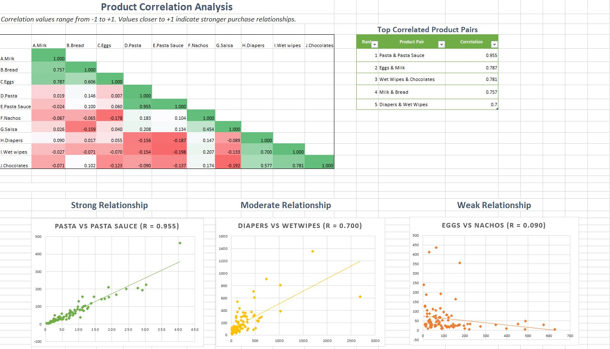
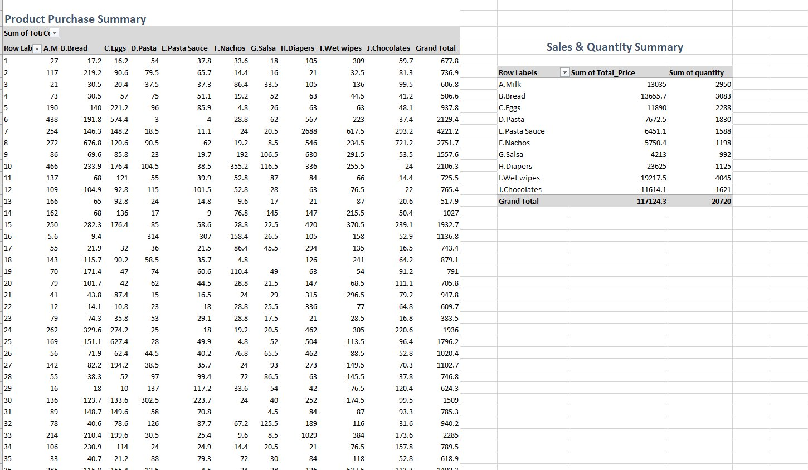

Which grocery products do customers actually buy together?
02 Case study · Retail analytics
Woolworths Merchandise Purchase Correlation
Uncovering hidden product relationships across 8,902 grocery transactions to drive smarter shelf placement and bundling strategy.

8,902 transactions
r = 0.955 top pair
01 — In 30 seconds
The Short Version
Built a 10×10 Excel correlation matrix from 8,902 transactions, colour-coded it as a heatmap and validated the pairs with scatter plots.
Pasta & Pasta Sauce (0.955) and Eggs & Milk (0.787) lead, plus a surprise: Wet Wipes & Chocolates (0.781).
8,902
Transactions Analysed
10
Product Categories Compared
0.955
Strongest Correlation Found
5
Strong Product Pairs (r ≥ 0.7)
02 — Visual Analysis
Excel Outputs
Click any screenshot to view it full size.

03 — Methodology
How It Was Done
Three steps. Select one to see the detail.
01
Data Preparation
Cleaned 8,902 transaction records and aggregated purchase totals per customer with pivot tables.
02
Correlation Matrix
Applied Excel's CORREL function across all product pairs to build a 10×10 matrix. Values near +1 = strong co-purchase.
03
Heatmap & Scatter Plots
Conditional formatting colour-coded the matrix, and scatter plots with trendlines validated each relationship.
04 — Key Findings